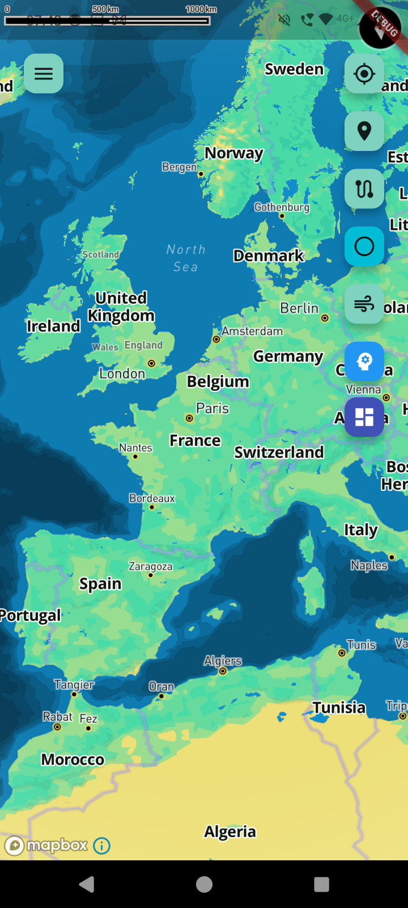
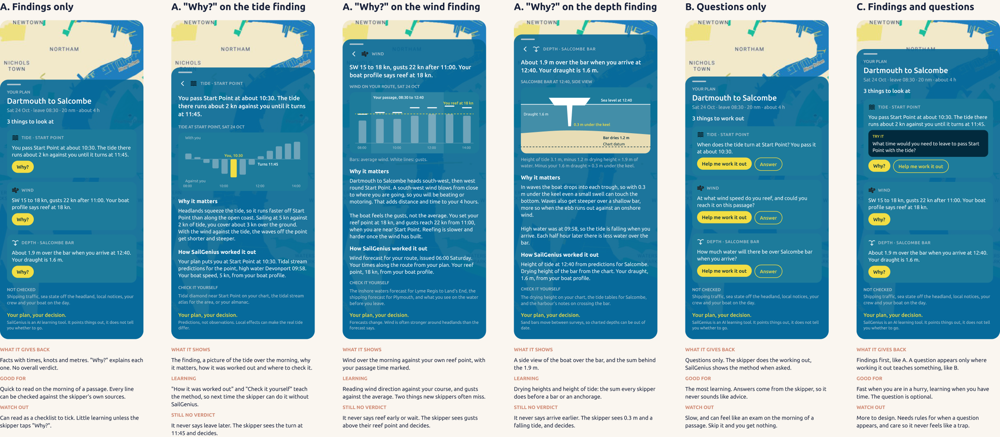
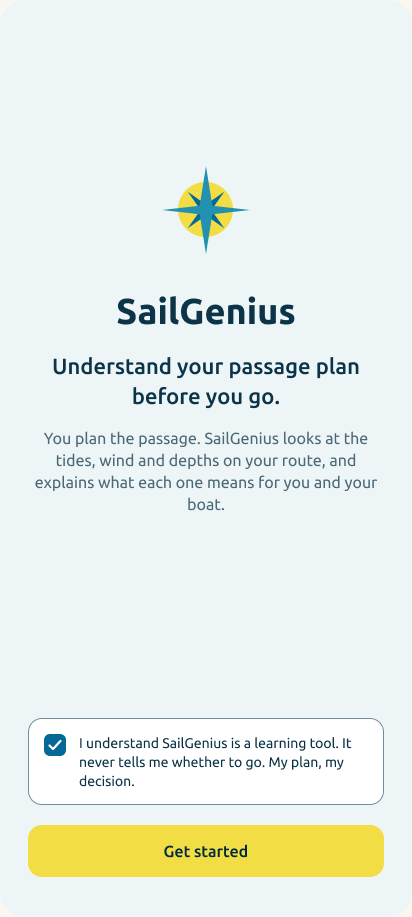
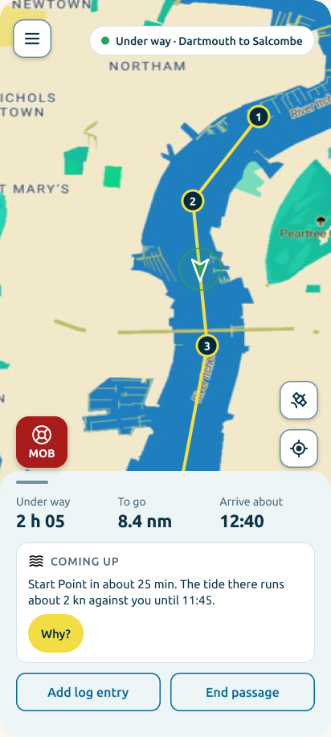
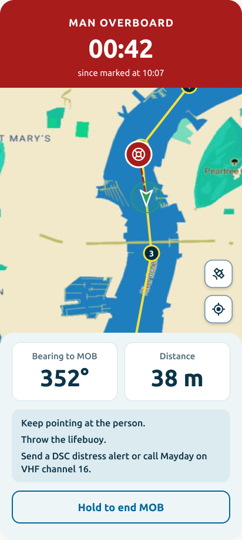
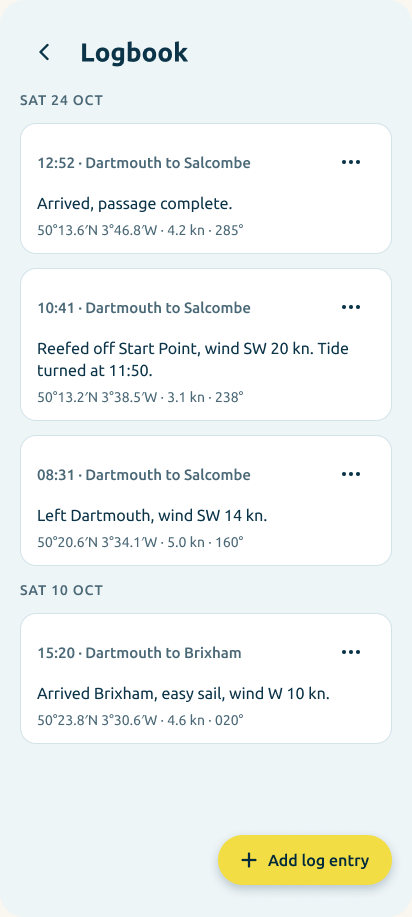

Where It Started
Too much on the chart
SailGenius is a sailing app built around a chart, with tides, weather and an AI assistant. When I reviewed it in May 2026 it had grown a long list of features, and the chart was crowded with buttons. I cut six features (a compass, a readings panel, IoT devices, a custom cursor, a theme toggle and a map style switch), reduced the side toolbar from seven buttons to five and moved the AI assistant to the top of the menu.

Who it's for
In October 2026, the developer and I agreed who the app was really for: new skippers. People with a sailing licence, a few seasons crewing or a newly bought boat. They know the basics and can plan a passage the traditional way, but they don't yet have the experience to know what to look out for.
For Learning, Not Deciding
The skipper plans, SailGenius explains
The app used to suggest routes for the skipper to accept. I turned that around: the skipper draws their own plan, and SailGenius points out what to look at, such as the tide at a headland, gusts above their reef point, or the depth over a bar, and explains why each one matters.
I also took out any verdict. There's no "looks good" and no "don't go". Whether to go to sea is the skipper's call, and an app shouldn't make it for them. Every screen ends with "Your plan, your decision", and a "Not checked" list says what the app didn't look at.
Three ways to give it back
I sketched three options on the same sample passage, Dartmouth to Salcombe: findings only, questions only, or both. Questions teach the most, but on the morning of a passage they can feel like an exam. I chose findings, each with a "Why?" that shows the numbers, how they were worked out and where to check them yourself. Questions can come later as an option.

Sketches: option A with its three "Why?" screens, then options B and C
"Why?" teaches the method
Each "Why?" screen has the finding, a simple chart, why it matters, how SailGenius worked it out and "Check it yourself". The aim is that next time, the skipper can do it without the app.

The New Flow
From first launch to the logbook
I designed the whole journey as a clickable prototype in Figma: 22 screens and 4 extra states. It starts with a welcome that asks the skipper to confirm they understand what the app does and doesn't do, then their boat (including cruising speed and when they reef), drawing a route that only accepts water, the findings, and then the passage itself: under way, arriving and the log entry. Anchor Watch, tides and a man overboard button sit alongside.



Welcome, Your boat, Drawing a route, Under way
Accessible on deck
I gave the app a calm, light theme and audited every screen: WCAG AA contrast, at least 14px text and 48px tap targets. That found 108 contrast issues and 32 tap targets that were too small, and I fixed all of them. The man overboard button is larger still, at 64px, because it has to work first time.


Where it is now
I built the new flow in the app as well and handed it to the developer with a written handover and a set of tasks. The project is now on hold. If it continued, next would be interviews with six to eight new skippers, with the prototype in hand, and a night mode for sailing after dark.